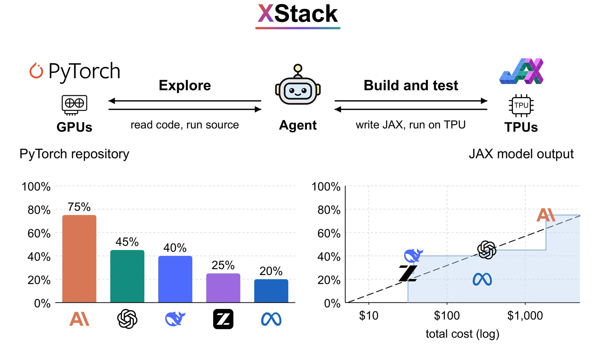
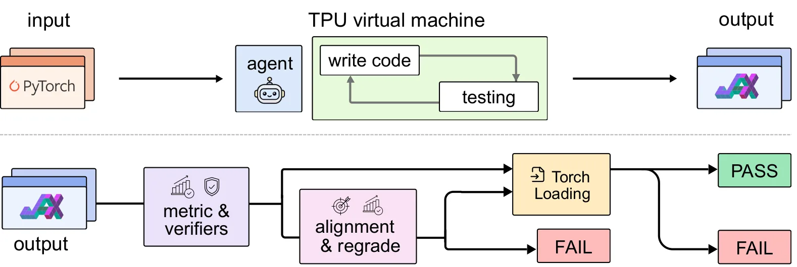
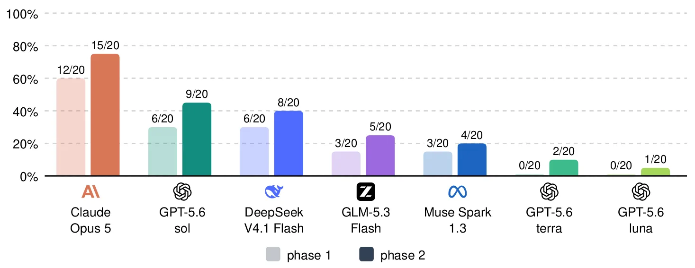

O problema da fragmentação de hardware e software
Imagine encontrar um repositório de código que implementa exatamente a arquitetura de modelo ou o pipeline de dados que sua equipe precisa. O artigo que o acompanha reporta resultados fortes, o código está público e o experimento já foi validado. Há apenas um problema crítico: o código foi escrito para uma infraestrutura que sua equipe não possui. Seu laboratório tem acesso a TPUs (Tensor Processing Units) do Google, mas o repositório assume GPUs da NVIDIA e utiliza o framework PyTorch.
Embora, em teoria, a ideia científica não dependa dessa escolha de implementação, na prática você fica preso. Usar esse trabalho significa reescrever o modelo, o otimizador, o pipeline de dados e a avaliação em JAX, já que esse é o stack principal que os TPUs utilizam. Além disso, tudo precisa funcionar sob um compilador diferente (XLA), uma hierarquia de memória distinta e um modelo de execução distribuída diferente. O que parece um detalhe de implementação torna-se uma barreira significativa para a reutilização da ciência.
Essa barreira é real e crescente. Até o final de 2025, os TPUs representavam cerca de 18,2% da computação global de IA, totalizando 3,81 milhões de unidades equivalentes a H100. No entanto, apenas 4,2% do código lançado com papers de ML em 2024 utilizava JAX. A maioria esmagadora ainda vive no ecossistema PyTorch/GPU. Isso cria uma necessidade prática urgente: mover sistemas funcionais entre stacks de software e hardware. O objetivo final é libertar o código de ML de seu ecossistema original, permitindo que pesquisadores acessem diferentes hardwares sem refazer todo o trabalho de engenharia.
Acreditamos que agentes de codificação automatizados devem ser capazes de eliminar essa barreira. O problema não é apenas traduzir sintaxe, mas cruzar fronteiras de framework e máquina. O benchmark XStack (Cross-Stack Benchmark) foi introduzido para testar diretamente essa capacidade: um agente recebe um repositório PyTorch funcional e uma máquina TPU limpa, e deve entregar um repositório JAX equivalente que reproduza os resultados originais.

Por que benchmarks existentes não bastam
Benchmarks anteriores de resolução de problemas (issue-resolution) geralmente começam com código quebrado e pedem que o agente o conserte. Outros benchmarks de conversão (conversion) comparam o código traduzido com o original na mesma máquina. Nenhum deles testa o cenário realista de migrar um sistema inteiro que já funciona em uma infraestrutura para outra completamente diferente.
A migração entre PyTorch e JAX não é uma simples tradução de sintaxe. Existem diferenças fundamentais na execução. No PyTorch, a execução é muitas vezes definida por passos (define-by-run), onde os objetos mantêm seus pesos e as funções operam sobre eles. No JAX, o código é tipicamente definido uma vez e compilado pelo XLA (Accelerated Linear Algebra) antes da execução, o que permite otimizações agressivas, mas exige uma mentalidade diferente de programação, especialmente em relação à imutabilidade e à gestão explícita de estados.
Além disso, a hierarquia de memória e os modelos de execução distribuída variam drasticamente entre GPUs NVIDIA e TPUs Google. Um agente que apenas traduz o código linha por linha não conseguirá lidar com essas nuances. O desafio é preservar o comportamento exato do sistema original enquanto se move toda a infraestrutura para um hardware que o código original não suporta. Isso requer que o agente não apenas escreva código, mas também entenda e adapte o pipeline de treinamento e avaliação.
O XStack foi desenhado para capturar essa complexidade. Cada tarefa no benchmark fornece ao agente um repositório PyTorch funcional e uma máquina TPU limpa. O agente deve reconstruir o código em JAX e garantir que o experimento original seja executado do início ao fim, atingindo o resultado publicado. A pergunta central é direta: um agente pode migrar um repositório de ML funcional para um novo framework e hardware corretamente?
Como funciona o benchmark XStack
O pipeline do XStack é estruturado em duas fases para garantir justiça e rigor. Na Fase 1, o agente recebe o repositório PyTorch e a máquina TPU. Ele não tem acesso ao resultado numérico esperado (o 'ground truth') nem à receita exata do experimento principal. Sua tarefa é explorar o código-fonte, entender a lógica e construir a versão JAX do zero. O agente pode explorar, ler o código, executar a fonte original para entender o comportamento e então escrever e testar o código JAX.
Após o agente entregar seu código, a Fase 2 entra em jogo. O código do agente é executado em uma máquina TPU fresca. Se a execução falhar ou os resultados não corresponderem aos originais, o sistema fornece ao agente uma ajuda limitada: a receita do experimento principal (o script de treinamento e avaliação). Isso alinha o agente com o que será avaliado, permitindo que ele corrija erros de integração ou configuração, mas não permite que ele receba o código-fonte corrigido.
A avaliação é feita por dois critérios principais. Primeiro, a execução deve ser bem-sucedida tecnicamente (sem erros de runtime). Segundo, os resultados numéricos gerados pelo código JAX devem corresponder aos resultados publicados no artigo original, dentro de uma margem de tolerância aceitável. Os autores também utilizam 'model judges' (outros modelos de linguagem avaliadores) para verificar a fidelidade semântica do código migrado, assegurando que a lógica não foi alterada apenas para passar nos testes numéricos.
Esta estrutura de 'frozen second phase' (segunda fase congelada) é intencional. Ao fornecer a receita do experimento apenas após a primeira tentativa, o benchmark evita que o agente 'cola' a resposta, forçando-o a demonstrar capacidade real de engenharia de software e adaptação de framework. A tabela 2 do paper detalha o que cada parte vê: o agente nunca vê o alvo de graduação inicial, garantindo que a migração seja feita de forma genuína.

Resultados: Agentes ainda não são confiáveis
Os resultados do XStack são claros: agentes de codificação atuais não são totalmente confiáveis para esta tarefa. Entre os sete agentes avaliados de cinco laboratórios diferentes, a taxa média de aprovação foi de apenas 31%. Isso significa que, em dois terços dos casos, o agente falhou em entregar um repositório JAX funcional e correto.
O agente mais bem-sucedido, Claude Opus 5, atingiu uma taxa de aprovação de 75% após a Fase 2. Isso é impressionante, mas ainda deixa 25% dos repositórios migrados com falhas. Outros modelos, como GPT-5.6-sol, atingiram 45%, enquanto todos os outros ficaram em 40% ou menos. É importante notar que a maioria dos agentes teve um desempenho muito pior na Fase 1, sem o auxílio da receita do experimento, destacando a dificuldade de migrar sem orientação explícita do pipeline de teste.
A Figura 4 do paper ilustra essa disparidade. As barras claras mostram o desempenho após a Fase 1, e as escuras após a Fase 2. A adição da receita do experimento ajudou todos os agentes a passar em mais repositórios, mas o ganho não foi uniforme. Alguns agentes melhoraram significativamente, enquanto outros ainda lutavam com erros fundamentais de lógica ou integração.
Esses números indicam que, embora os agentes estejam começando a quebrar a barreira entre frameworks, eles ainda estão longe de serem uma solução plug-and-play para pesquisadores. A migração de repositórios inteiros é uma tarefa de horizonte longo (long-horizon) e complexa, que envolve muitos componentes interdependentes. Um erro em qualquer um deles pode fazer todo o experimento falhar.

O custo da migração e a fronteira de Pareto
Um aspecto crucial do XStack é a medição do custo. Migrar código não é apenas uma questão de sucesso ou fracasso; é também uma questão de recursos computacionais e financeiros. O paper analisa a relação entre a taxa de aprovação e o custo total gasto em chamadas de API e execução de código.
Os resultados mostram que a taxa de aprovação cresce linearmente com o logaritmo do custo. Isso significa que, para cada aumento exponencial no custo, há um ganho linear no sucesso. A Figura 1 (parte inferior direita) mostra essa relação, com uma linha tracejada representando o ajuste linear e a sombra indicando a fronteira de Pareto, que representa a melhor taxa de aprovação alcançada a um custo específico.
Essa descoberta é importante porque sugere que, embora seja possível aumentar a taxa de sucesso gastando mais dinheiro (mais iterações, mais tentativas), há um limite prático. Agentes que gastam muito dinheiro sem melhorar sua estratégia de verificação atingem uma meseta de desempenho. A fronteira de Pareto mostra quais agentes são mais eficientes, ou seja, quais alcançam a melhor taxa de aprovação com o menor custo.
Para pesquisadores e engenheiros, isso implica que a migração automatizada ainda é cara. Se você precisa migrar um repositório crítico, não pode simplesmente confiar em um agente genérico; você precisa de agentes de alta qualidade (como o Claude Opus 5) e estar preparado para gastar recursos significativos em iterações de correção.
Limitações e o que o paper não mostra
É crucial entender o escopo do XStack. O benchmark foca exclusivamente na migração de PyTorch/GPU para JAX/TPU. Isso significa que os resultados não podem ser generalizados para outras migrações, como TensorFlow para PyTorch, ou para hardwares diferentes, como ASICs personalizados ou CPUs. A complexidade da migração varia drasticamente dependendo das diferenças entre os frameworks e hardwares envolvidos.
Além disso, o benchmark avalia apenas repositórios que já possuem resultados publicados e validados. Isso garante que exista um 'ground truth' para comparação, mas também significa que o XStack não testa a capacidade do agente de criar novos algoritmos ou modelos do zero. O foco é na engenharia de software e na adaptação de sistemas existentes, não na pesquisa de ponta.
Outra limitação é a dependência de 'model judges' para a avaliação semântica. Embora úteis, esses avaliadores baseados em LLMs podem introduzir vieses ou erros. A correspondência numérica é mais objetiva, mas a margem de tolerância para 'sucesso' pode ser debatida. Se um modelo JAX produz um resultado ligeiramente diferente devido a diferenças de precisão numérica ou ordem de operações, isso é considerado falha? O paper define critérios claros, mas a nuance técnica permanece.
Finalmente, o XStack não avalia a eficiência computacional do código migrado. Um agente pode entregar um código JAX que funciona e produz os resultados corretos, mas que é significativamente mais lento ou consome mais memória que a versão original otimizada. O foco do benchmark é a correção funcional e a fidelidade aos resultados, não a otimização de performance.
Conclusão: Um passo em direção à liberdade de hardware
O XStack representa um passo significativo em direção à medição do progresso na migração de código de ML entre frameworks e hardwares. Ao estabelecer um benchmark realista e rigoroso, os autores fornecem uma métrica clara para avaliar a capacidade dos agentes de codificação de lidar com tarefas complexas de engenharia de software.
Os resultados mostram que ainda estamos longe de uma solução perfeita. A taxa de sucesso de 75% para o melhor agente é promissora, mas insuficiente para a produção em larga escala. A necessidade de verificação rigorosa e a alta correlação com o custo indicam que a automação total ainda requer supervisão humana e recursos significativos.
No entanto, o XStack também mostra que a barreira está começando a ceder. Agentes podem, de fato, migrar sistemas de ML através das fronteiras do framework e do hardware. Isso sugere que, com melhorias contínuas nos modelos e nos métodos de verificação, poderemos um dia alcançar a liberdade de hardware desejada, onde o código de pesquisa científica pode ser executado em qualquer infraestrutura disponível, sem barreiras de implementação.
O lançamento do XStack convida a comunidade a continuar medindo esse progresso. Ao fornecer um benchmark aberto e rigoroso, os autores incentivam o desenvolvimento de agentes mais robustos e confiáveis, contribuindo para um ecossistema de ML mais flexível e acessível.
O que fica
- A migração entre stacks (PyTorch para JAX) envolve mais que tradução de código; exige adaptação a diferentes hardwares e compiladores.
- Agentes atuais falham em 69% dos casos; o melhor modelo (Claude Opus 5) atinge apenas 75% de sucesso após refinamento.
- A verificação rigorosa contra o resultado original é o fator determinante para o sucesso, não apenas a geração de código.
- O custo financeiro escala linearmente com o logaritmo da taxa de aprovação, indicando que mais iterações não resolvem problemas fundamentais.
Paper original: XStack: A Benchmark for ML Repo Migration
Comentários
Nenhum comentário ainda. Seja o primeiro.